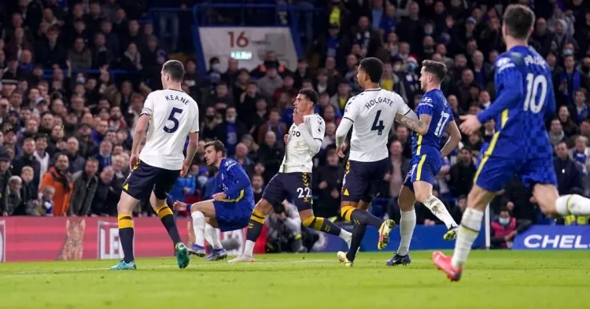

Официально: «Тухель остается в «Челси» на следующий сезон»
«Челси» потерял очки в матче с «Манчестер Юнайтед»
48 часов до объявления нового владельца «Челси»
«Челси» сенсационно проигрывает команде Фрэнка Лэмпарда - 1:0
«Барселона» подпишет летом трех футболистов из «Челси»
Кристенсен перейдет в «Барселону»
«Челси» сделал предложение о контракте футболисту «Барселоны»
«Челси» заинтересован в защитнике мадридского «Атлетико»
«Челси» связан с трансфером защитника ПСЖ
«Реал» проиграл борьбу «Челси» за восходящую звезду
Лорд Великобритании опасается полного исчезновения «Челси»
«Челси» нацелился на молодого игрока «РБ Лейпцига»
